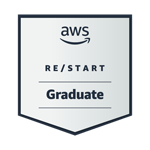
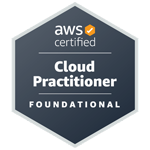
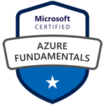
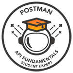

Brian Labigalini

Objective: build, manage and deliver Cloud solutions. Establish operational excellence and resilient infrastructure.
I was selected for Amazon's 're/Start' bootcamp.
I am both AWS and Azure accredited and lifelong tech hobbyist who is self-taught.
My passion, growth mindset and determination mean I have thousands of hours of experience.
Visitor Count: .


Key Skills
- Empathetic and skillful communicator.
10 years' experience dealing with challenging internal and external stakeholders.
- Experienced problem solver, ensuring SLA's are delivered.
- Proficient in automation using tools like Ansible, Chef and Puppet.
Invoked and deployed containers using Docker with integrated monitoring - DataDog.
- Adept in Infrastructure as Code (IaC) tools like Terraform and CloudFormation.
- Comprehensive understanding of Agile, ITIL, DevOps principles and practices.
- Extensive experience with Linux system administration along with BASH and Shell scripting.
- Skilled in database management with know-how in both SQL and NoSQL databases.
- Capable in cloud native tooling (Lambda, Source Control [CodeCommit, GitHub], ELB, AWS SDK) and essential infrastructure skills (API's [CRUD & REST] and non-Unix Scripting [Python, Powershell, JavaScript]).
Projects (hosted on GitHub)
- CloudDevBrian.com [Full-Stack Infrastructure]
- HTML, CSS, JavaScript, DNS (SSL), CDN (CloudFront), Lambda (API, Python), DynamoDB (NoSQL) and CI/CD (CodePipeline, GitHub) and IaC (Terraform).
- MediaConvert Web Application [Event-Driven Architecture]
- Under development.
- HTML, CSS, JavaScript, Lambda (API, Python), MediaConvert, IAM (Cognito), S3 (Event Notification, SNS), CI/CD (GitHub) and IaC (Terraform).
Cloud Experience
AWS re/Start Bootcamp - Cloud Platform Engineer Training
Aug 2023 - Nov 2023
- Instructor-led sessions with hands-on labs delivered in live AWS environment.
- Cloud computing concepts and economics, emphasizing AWS Cloud Adoption Framework and pricing.
- Proficiency in AWS services like EC2, VPC, S3, EBS, Glacier, ELB, RDS, CloudWatch, and Autoscaling.
- Networking skills covering IP, switching, routing, firewalls, CIDR, subnets, VPN, and VPC management.
- Security knowledge spanning user/access management, network security, encryption, IDS, incident management, and AWS security best practices. Familiarity also with cloud security fundamentals, including the AWS Shared Responsibility Model, IAM, Trusted Advisor, and AWS Config.
- Monitoring expertise utilizing Amazon CloudWatch, CloudTrail, CloudWatch Logs for resource consumption, troubleshooting, and cost reduction.
Work Experience
HM Revenue & Customs - Enforcement & Insolvency Officer
2024 May - Current
- Dealing with a broad range of different and complex customer cases.
Oxleas NHS Trust - Medical Staffing Officer
2020 June - April 2023
- Rostering SaaS Implementation Lead.
- Ensuring compliance with Medical contract T&C's as well as Trust HR policies.
- Supporting Clinical Directors with financial management of directorate budgets.
- Operational rota creation and management - Consultant's and Inpatient Psychiatric unit at PRUH.
Dartford & Gravesham NHS Trust - Medical Education Officer
Dec 2018 - June 2020
- DGT Med Ed Website and internal e-Learning portal lead.
- Staff Awards Finalist: Improvement and Innovation Individual category.
- Foundation Doctor tutelage with a 100% success rate across two cohorts (60+ Jnr Dr's).
- Organised and assisted delivery in regional training days for the Royal College of Physicians.
Kent County Council - Administrative Officer
Sep 2014 - Dec 2018
- PA duties to the Service Manager. Diary management, minuting, etc.
- Child Protection conference lead for West Kent Children in Care service.
- Developed CRM spreadsheet managing 400+ monthly court ordered supervised parent child contacts.
Qualifications
- AWS Certified Cloud Practitioner (CLF-C02)
- AWS re/Start Graduate
- Microsoft Azure Fundamentals (AZ-900)
- University of Hull, BA (Hons) Politics
- Mid-Kent College, BTECH National Award: IT Practitioners